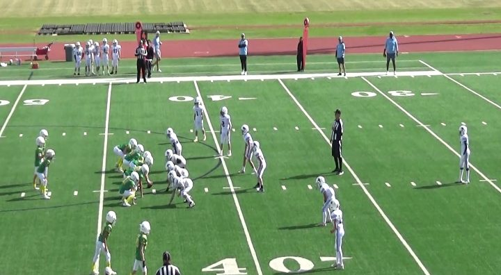
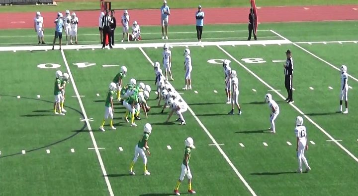
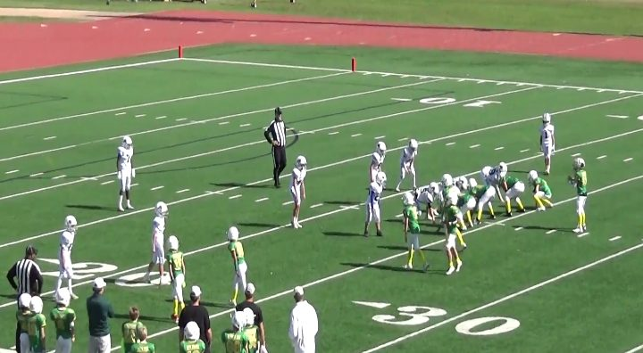
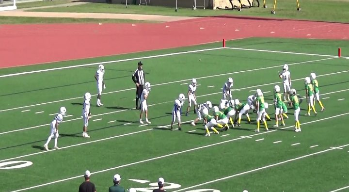
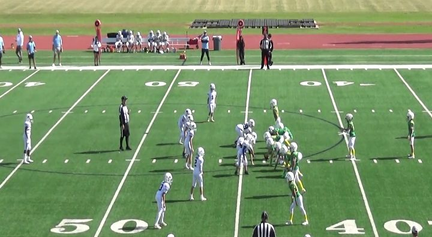

prepared by Mr. Wang from Ducks vs Green Wave, November 14, 2026
Stop QB #13 to the TE side. Don’t jump on the hard count
The Ducks give the ball to #13 and run him to the tight end’s side. 30 of their 38 plays
were runs and #13 carried 27 of them: off tackle, the sweep behind halfback motion, and quarterback dives.
#3 threw every pass (8), and only
2 were caught. The tells are who is at quarterback and where TE #7 lines up. They also drew the defense offsides with a hard count three times.
#3 at QB = PASS8 of his 9 snaps at quarterback were passes. Corners and
safeties stay deep; find the tight end on the corner route.
#13 at QB = RUN27 runs, no passes. His off tackle goes to the side of TE #7, the
tight end on the line: shift that way.
Keys
1. Find TE #7 and stop #13
#13 had 27 of 30 runs for 144 yards. His off tackle runs go to the side where #7, the
tight end on the line, lines up. In split backs he can be on either side; with two tight ends he is the one on the line.
Shift to #7 and know where #13 is on every snap.
2. Find #3
#3 at quarterback: think pass. He had the ball on 10 plays and 8 were passes: 2 caught
(15 and 25 yards), 3 incomplete, 3 scrambles or sacks. #13 at quarterback: it is a run, and the
off tackle goes to TE #7’s side.
3. Watch the ball, not the count
Their hard count pulled the Green Wave offsides three times (plays 31, 50 and 54). Move on the
ball, not the quarterback's voice. Free yards are the easiest thing to take away.
“Which way” uses the strong and weak sides from the chart. Their misdirection goes the other
way: the bootleg after a fake handoff and the reverse to the motion receiver. Dives have no side: 6 of them,
mostly from two fullbacks in short yardage.
Their formations
Their three main looks, their short-yardage set and their misdirection play, 30 of their 38 plays. The film frame shows how they lined up just before the snap.
A. Split Backs, Twin WRs Off Tackle to TE #7
10 of their 38 plays: 7 runs, 3 passes.
Look 1: TE #7 opposite the twins. The run goes left, to #7, behind the left halfback.Look 2: TE #7 with the twins. The run goes right, to #7, behind the right halfback.
Two looks, twins on the right in both. TE #7 is the tell: he lines up opposite the twins or with them, and #13 runs off tackle to his side behind the halfback on that side (5 off tackle runs, all to the TE’s side; the chart does not say which look each came from). Now and then a dive up the middle (2). The throws (3, all by #3, all early in the game) look for the TE: play 9 is the corner route to the TE. The other two ended in scrambles.

On film: play 9, just before the snap. Ducks in green with yellow pants.
Schematic, twins and the flexed TE drawn right. Everything goes to the side of TE #7, the tight end on the line, away from the twins: a pass to the inline TE on a corner route (3, none caught, one sack), or #13 off tackle to that side with RB #3 leading (2, 7.0 avg). The RB lines up beside the QB on the inline TE’s side and leads the run. The one other big throw was the 25-yard fly to #15 outside.

On film: play 76, just before the snap. Ducks in green with yellow pants.
Schematic, drawn the way they usually line up: receivers left. No tight end here. All four receivers line up on one side, twins close to the line and twins wide, so nobody is split to the other side. The RB sits beside the QB, offset toward the receivers. When the RB motions to just outside the close twins, #13 sweeps right behind him: 5 of 5 motion snaps, all to the receivers’ side. With no motion it was #13 off tackle to that side (2).

On film: play 36, just before the snap. Ducks in green with yellow pants.
Schematic. Their short-yardage play. Two fullbacks about 2 yards behind the line, a little tighter than split backs; twin receivers about 2 yards outside the line, usually on the right, and the tight end on the left. #13 takes the shotgun snap and runs up the middle: the center and right guard double-team the defensive tackle, both fullbacks block into the A gaps, and he finds the hole. 4 times for 6.0 yards a carry, including the 10-yard touchdown on 55, plus the extra-point try on 56.

On film: play 55, just before the snap. Ducks in green with yellow pants.
Schematic. Their misdirection play. Two tight ends, twin receivers about 2 yards outside the line. #13 is 4 yards deep and the halfback 4 yards behind him. #13 fakes to the halfback running toward the twins, keeps it and bootlegs wide the other way: 2 times (7, 4 yards).

On film: play 30, just before the snap. Ducks in green with yellow pants.
Every touch by jersey number, runs and catches. Passes count for the receiver when the chart names one.
#
Position
Touches
Yards
TD
Calls
#13
QB, runs it; RB in the stack
28
159
2
QB Off Tackle 14 · QB Sweep 6 · QB Dive 5 · Fake Handoff, QB Bootleg 2 · Quick Pass to RB in the Flat 1
#3
QB on passes; RB on some runs
2
2
0
QB Dive 1 · RB Off Tackle 1
#8
WR (reverse)
1
15
0
WR Reverse 1
#15
WR (deep fly)
1
25
0
Deep Fly to WR #15 1
Passes: 8, all thrown by #3. Caught: the quick pass to #13 in the flat (15) and the deep fly to
#15 (25). Not caught: 3 incompletions on the corner route to the tight end, two scrambles and a sack (also on a TE corner).
Everybody: find #3 before the snap. If #3 is at quarterback, think pass. If #13 is at quarterback, it is a
run: look for it toward TE #7.
Defensive line: attack #11, their right tackle. He is their weakest blocker: slow out of his stance, and
often he does not block anyone. Whoever lines up over him, get off on the ball and go straight into the backfield on
his side.
Everybody: find TE #7 and shift to his side. He is the tight end on the line. In split backs he can line up
on either side, with the twins or away from them; with two tight ends he is the one on the line, away from the twins.
No tight end (four receivers on one side): shift to the receivers.
Two fullbacks: short yardage, QB up the middle. The center and right guard double-team our tackle and both
fullbacks block into the A gaps. Tackles: split the double team and stay low. Linebackers: fill downhill and meet #13 in
the hole. Watch: Play 55: 10-yard TD · Play 87: 7 yards · Play 75: 5 yards
Practice the calls: “Ball, not the count!” “Seven’s side!” “Motion, sweep!” “Three, pass!” “Bootleg!”
Quiz the players:Ducks player quiz. Ten questions on these formations, made for the iPad at practice.
Teach it with these clips
The Ducks wear green with yellow pants on this film. Green Wave wear white.
HB motion, QB sweep
Four receivers on one side. The halfback motions toward them and #13 sweeps right behind him. The end and outside linebacker on that side: set the edge.
38 Ducks scrimmage snaps from the chart. Extra points, not counted above: 56 (QB Dive: fumble -3 yards, XP no good), 81 (QB Dive: 1 yard, XP no good).
Left out: the hard counts (31, 50, offsides on the defense), 2 (Fumble bad snap),
the bad snap on 38, and the kneels at the end (88, 89).